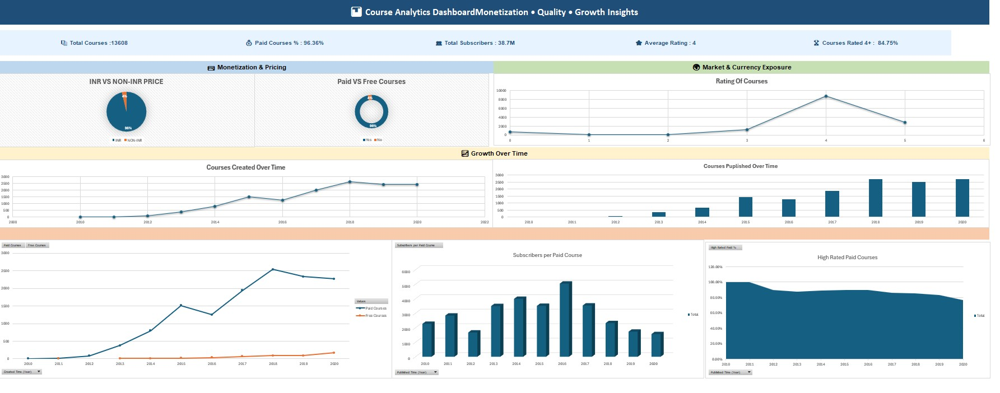
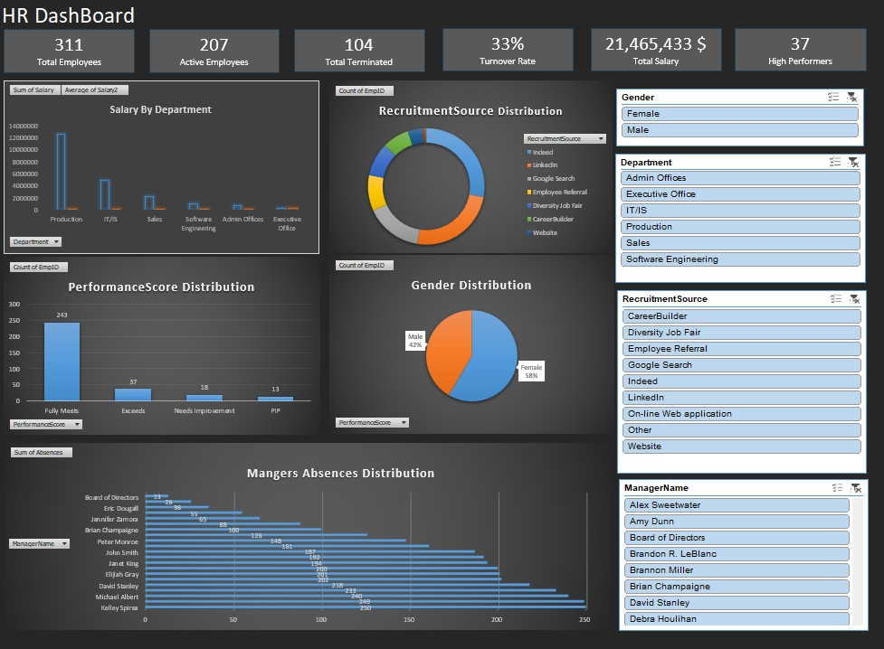
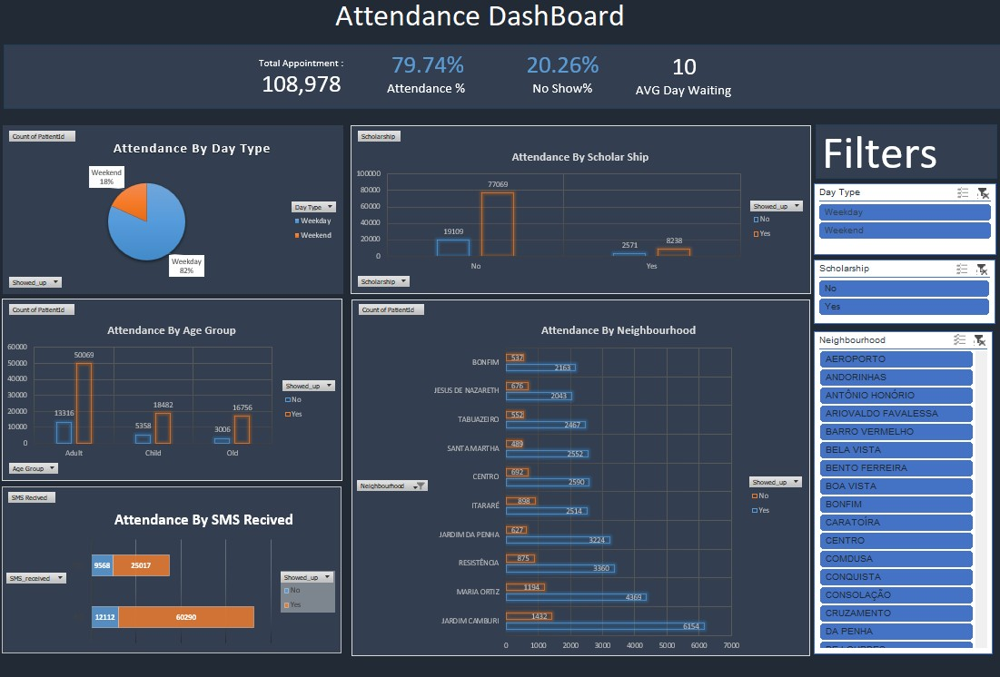
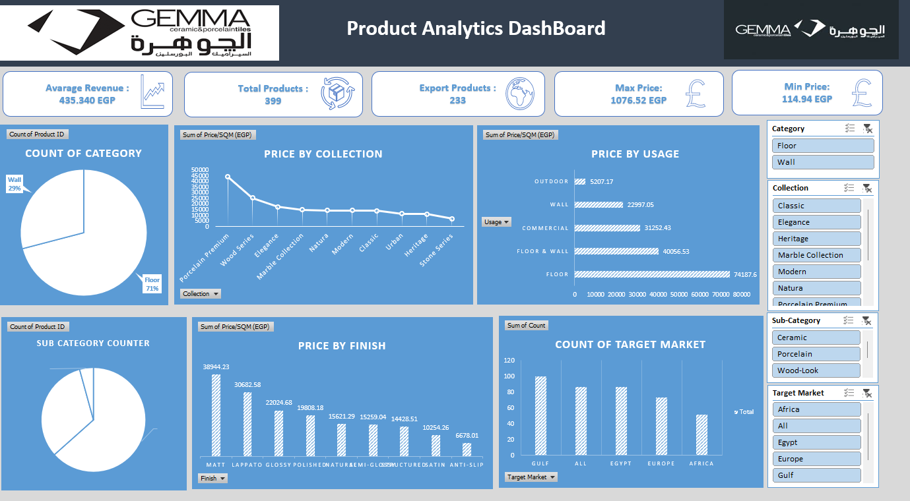
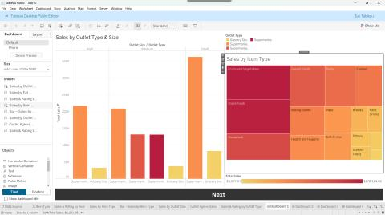
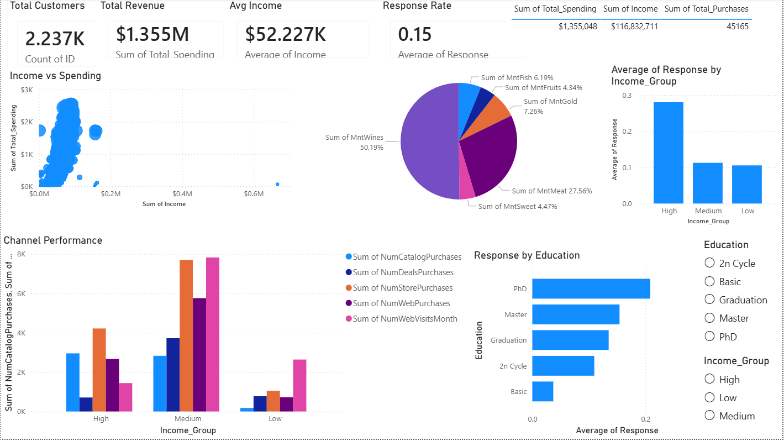
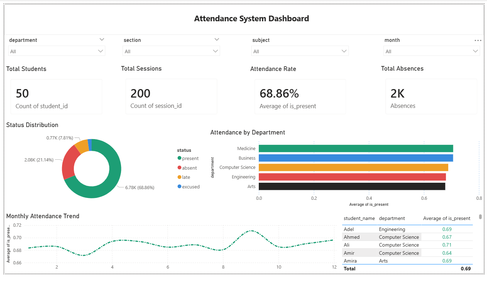
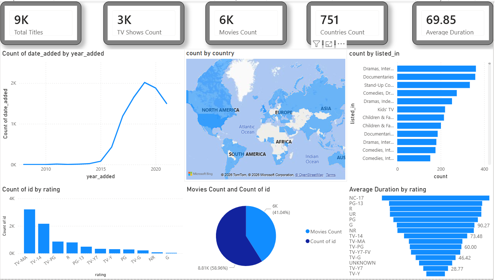
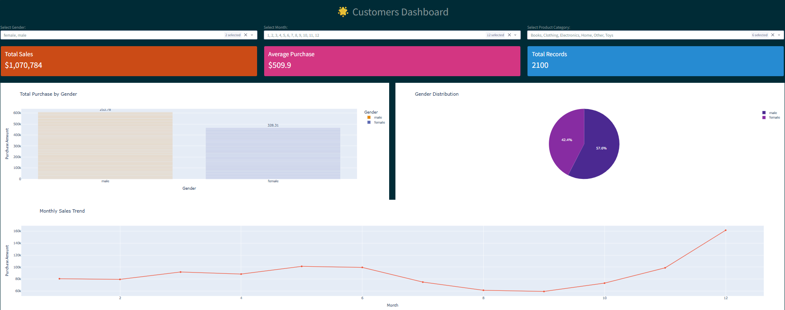
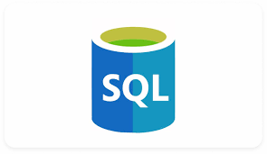

Freelance Data Analyst · 1 Year Client Experience · Sadat City, Egypt
Omar AbdElpaq
Turning raw data into decisions worth acting on.
I build Power BI dashboards, SQL analysis, and Excel BI reports that give founders and teams a clear answer — not just a chart. 1 year of freelance client delivery across HR, sales, retail, and multi-industry data, plus 17+ portfolio projects proving the range.
Who I am
Analyst by skill,
problem-solver by nature
I'm a Freelance Data Analyst based in Sadat City with 1 year of hands-on client experience delivering end-to-end analytics solutions — from messy raw files to polished, decision-ready dashboards.
My freelance work spans HR analytics, sales performance, ratings analysis, and multi-industry BI — working with real client data under confidentiality, managing full project lifecycles independently, start to handoff.
Beyond freelance, I've built 17+ portfolio projects across e-commerce, banking, healthcare, and retail, and I'm currently completing my AI & Data Science degree at Menoufia National University. I specialize in taking a business question, finding it in the data, and shipping a dashboard someone will actually keep open.
Experience
Freelance Data Analyst — 1 Year
Multiple clients · HR · Sales · Retail · Multi-Industry
Education
AI & Data Science Student
Menoufia National University — IoT & Big Data Program
Training
NTI & ITIDA — 120 Hours
Data Analytics Summer Training · Final score: 92.5%
Certifications
NVIDIA · AWS · Huawei · NTI
Deep Learning, AI Practitioner, HCIA-AI
How I can help
Services built around
one outcome: clarity
Power BI Dashboard Development
Interactive dashboards with DAX measures, drill-downs, and slicers — built around the 3–5 questions leadership actually asks every week.
SQL & Database Analysis
Query design, joins, aggregations, and reporting logic against PostgreSQL and relational data to answer specific business questions fast.
Python Data Cleaning & ETL
Pandas-based pipelines that take raw, inconsistent files and load them into a clean, analysis-ready structure — repeatable, not one-off.
Excel Power Pivot & BI Reporting
Star-schema data models, DAX measures, and PivotChart dashboards for teams that live in Excel and need it to do more.
Data Modeling & KPI Design
Fact/dimension modeling and KPI frameworks that hold up as the business grows, instead of breaking at the next reporting cycle.
Exploratory Data Analysis
Structured EDA that surfaces the patterns, outliers, and segments hiding in a dataset before a single dashboard is built.
Why work with me
Why hire me over
another data analyst
I ship the whole thing, not just the chart
Every freelance engagement runs start to finish — requirements, data model, build, and client handoff — managed independently, on scope.
Real client data, not just tutorials
A year of freelance work under real confidentiality agreements sits alongside 17+ public projects — you can verify both.
Tool-agnostic, question-first
Power BI, SQL, Python, Excel — I pick the tool that fits your stack and budget, not the one I'd rather practice.
Documented, verifiable training
120 hours of formal data analytics training (92.5% final score) plus AI & Data Science coursework back up the freelance work.
Client Work
Freelance experience
Over the past year I've worked directly with clients on real business problems — not practice datasets. Every engagement was end-to-end: scoping requirements, designing the data model, building the deliverable, and iterating with the client until it was decision-ready.
Client data stays strictly confidential. What I can share is the type of work, the tools used, and the results delivered.
HR Workforce Analytics
Employee performance, turnover patterns, salary distribution, and headcount analysis. Delivered as an interactive Excel Power Pivot dashboard with slicers and KPI scorecards.
Sales Performance BI Report
Multi-dimensional sales dashboard tracking revenue, product performance, channel breakdown, and period-over-period trends. Built with fact/dimension data model for flexible drill-down.
Ratings & Sentiment Analysis
Customer ratings and feedback analysis across product categories. Identified patterns in satisfaction scores and delivered actionable insights for product prioritization.
Multi-Industry KPI Dashboard
Cross-sector executive dashboard consolidating KPIs from multiple business lines into a single reporting view. Enabled leadership to monitor performance with one-click slicer filtering.
What I work with
Technical skills
Analysis & BI
Python & Data Science
Databases
Development
Soft Skills
Currently Deepening
Work
Featured projects

EZZ Steel Production Analytics
Production KPI dashboard for EZZ Steel covering 3 plants, 6 electric arc furnaces, and 4 years of operational data with strategic insights.
View Repository
Amazon Sales Data Analysis
End-to-end analysis of Amazon sales operations: data cleaning, EDA, and KPI calculation to improve e-commerce performance.
View Repository
Udemy Course Analytics
Deep analysis of Udemy course data to understand monetization trends, content quality, and market growth.
View Repository
Retail Sales & Profitability
Multi-dimensional retail analysis exploring sales, profit, customer segments, and regional performance.
View Repository
Banking Customer Credit
Analysis of customer credit profiles, risk groups, and geographic trends to support financial decision-making.
View Repository
Patient Appointment Attendance
Study of patient no-shows and factors affecting attendance rates including demographics and SMS reminders.
View Repository
Mobile Market Specifications
Analysis of smartphone specs and pricing trends across 30+ brands using hardware features and market data.
View Repository
Laptop Sales Market Analysis
Laptop market pricing based on CPU, GPU, RAM, and OS with cleaned and visualized datasets.
View Repository
HR Workforce Analytics
Employee performance, turnover, and salary distribution analysis to improve HR decisions.
View Repository
Hospital Operational Analytics
Healthcare operations covering admissions, doctor performance, insurance, and revenue insights.
View Repository
Gemma Analytics
Cleaning, transforming, and visualizing a complex dataset to extract meaningful business insights.
View Repository
Car Market Analysis
Global car market analysis focusing on pricing, performance metrics, and statistical insights.
View Repository
Data Visualization with Tableau
Customer demographics and purchase behavior analysis uncovering key insights to improve retention and marketing strategies.
View Repository
Data Visualization & Insights — Power BI
Interactive dashboard to analyze and visualize data, uncovering trends that support smarter business decisions.
View Repository
Attendance ETL & Analytics System
Full ETL pipeline cleaning and loading student attendance data into PostgreSQL, visualized in Power BI by department, subject, and week.
View Repository
Netflix Titles ETL & Analytics Pipeline
ETL pipeline processing the Netflix titles dataset — cleaning, loading into PostgreSQL — with SQL analysis and a Power BI content insights dashboard.
View Repository
Customer Purchase Prediction
Python-based prediction model using behavioral and demographic data to determine whether a customer will purchase electronics products.
View Repository
SQL Data Analysis Projects
SQL projects extracting business insights from structured datasets using advanced queries, joins, subqueries, and aggregations.
View RepositoryNo projects match this filter yet.
Deep dives
Selected case studies
Three projects walked through in full — the problem, the data, the process, and what came out the other end.
EZZ Steel Production Analytics
Problem
Production performance across 3 plants and 6 electric arc furnaces was tracked separately, making it hard to compare output and efficiency at a company-wide level.
Dataset
4 years of operational production records across plants and furnace lines.
Tools Used
Excel · Power Query · PivotTables · KPI dashboards
Process
Consolidated multi-plant records into one clean structure, built comparable KPIs across furnace lines, then laid them out in a single production dashboard.
Insights Discovered
Surfaced which plants and furnaces consistently over- or under-performed, and where output patterns shifted across the 4-year window.
Business Impact
Gave leadership one strategic view of production across the whole operation instead of three disconnected plant reports.
Attendance ETL & Analytics System
Problem
Raw student attendance records needed a repeatable pipeline into a queryable database, then a reporting layer department heads could actually use.
Dataset
Student attendance logs by department, subject, and week.
Tools Used
Python (Pandas) · PostgreSQL · Power BI
Process
Built a full ETL pipeline in Python to clean and load raw records into PostgreSQL, then connected Power BI for department- and subject-level reporting.
Insights Discovered
Identified attendance trends by department, subject, and week, highlighting where drop-off was concentrated.
Business Impact
Turned a manual, static record-keeping process into a repeatable pipeline with a live, filterable reporting layer.
Netflix Titles ETL & Analytics Pipeline
Problem
The public Netflix titles dataset arrives messy and unstructured — not usable for content-strategy analysis without a proper pipeline.
Dataset
Netflix titles catalog — genre, release year, rating, and country of origin fields.
Tools Used
Python (Pandas) · PostgreSQL · SQL · Power BI
Process
Cleaned and transformed the raw dataset in Python, loaded it into PostgreSQL, ran SQL analysis, and built a Power BI content-insights dashboard.
Insights Discovered
Surfaced content trends across genre, release timing, rating, and country — the kind of view a content team would use to spot catalog gaps.
Business Impact
Demonstrates a full production-style pipeline: messy public data in, decision-ready dashboard out — reusable for any catalog or content dataset.
Credentials
Certifications & training

NTI · Engineers for Sustainable Egypt
AI Ambassadors Program
2nd cohort — strengthening AI knowledge and leadership skills across Egypt.

NTI & ITIDA
Data Analytics Summer Training
120 training hours (90 technical + 30 freelancing). Final score: 92.5%.

Huawei
HCIA Artificial Intelligence
40 hours of intensive AI training over 6 weeks, covering core AI and deep learning foundations.

NVIDIA Deep Learning Institute
Fundamentals of Deep Learning
Introduction to deep learning and practical applications for building intelligent solutions.

Amazon Web Services
AWS AI Practitioner Challenge
Built an AI-powered app using PartyRock and leveraged AWS AI tools to analyze data and generate insights.

CIB Egypt — Summer Internship 2026
Generative AI: Principles & Best Practices
Completed 13/13 learning modules at 95.7% average, delivered in partnership with CFA Institute, IFC World Bank Group, Frankfurt School of Finance & Management, IE University and LinkedIn Learning.

Digital Egypt Pioneers Initiative — Round 5, 2026
Accepted — AI & Data Science, Microsoft Data Engineer Track
Selected into DEPI's national upskilling program, progressing from Data Analyst toward Data Engineer.
Questions
Frequently asked
questions
Power BI and Excel dashboard builds, SQL-based reporting, Python data cleaning/ETL pipelines, and general business intelligence work — anything from a single reporting deliverable to a full data-to-dashboard pipeline.
Yes. I'm based in Sadat City, Egypt, and work remotely with clients regardless of location — all communication, delivery, and revisions happen online.
Power BI, Excel (Power Pivot/Power Query), SQL/PostgreSQL, and Python (Pandas). I pick the tool based on what your team already uses so the deliverable fits into your workflow, not mine.
Client data and deliverables stay strictly confidential — the freelance case types shown on this site describe the work without exposing any client's actual data, numbers, or identity.
Four steps: scope the requirements and questions you need answered, design the data model, build the dashboard or pipeline, then walk you through it and document how to maintain it.
Every public project links to a real GitHub repository you can open and review. Certifications and training scores are listed with the issuing organization for verification.
Let's talk
Ready to
work together?
Available for freelance data analytics projects — dashboards, BI reports, ETL pipelines. Based in Sadat City — working remotely with clients across Egypt and worldwide.
Phone / WhatsApp
Location
Sadat City, Menofia, Egypt
Status
● Available for projects